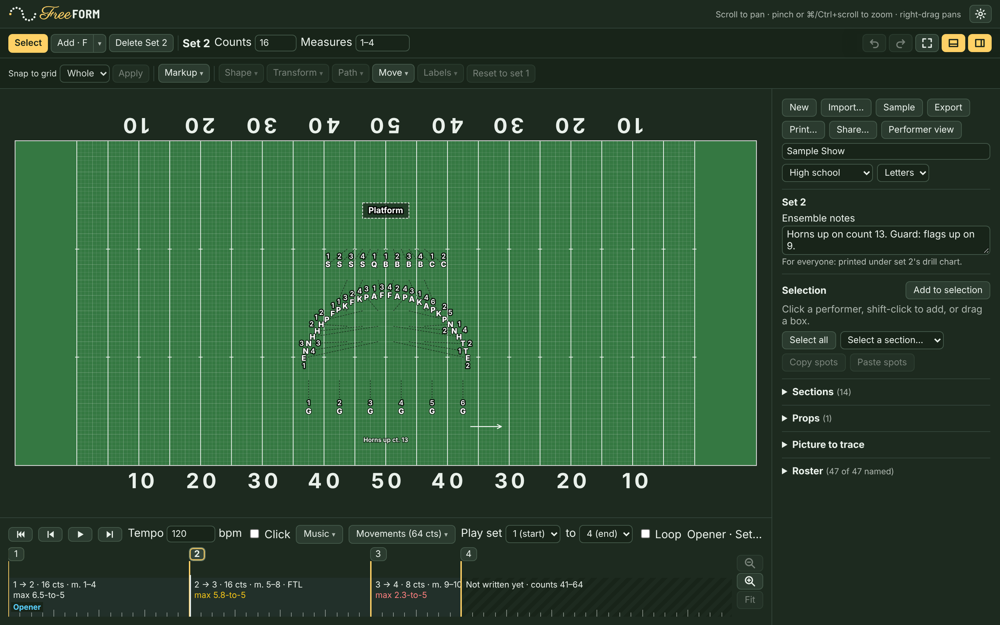
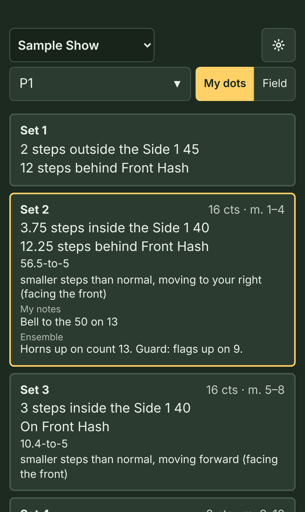

Diseño de drill gratis para bandas de marcha, drum corps e indoor
Drill, without the bill.
FreeFORM Drill funciona en tu navegador. Escribe el show en una computadora o un iPad, mira cada movimiento tiempo por tiempo con tu música, imprime hojas de puntos y gráficas de drill, y manda el drill a los teléfonos de tus estudiantes. No hay nada que instalar, ninguna cuenta que crear y ninguna licencia que pagar, para una banda de cualquier tamaño.
El editor todavía está en inglés; la vista de los estudiantes en el teléfono ya está en español.
En un teléfono, FreeFORM muestra el drill como lo ven tus integrantes. Para escribir drill, abre esta página en una computadora o un iPad.

Para directores y escritores de drill
- Hashes de preparatoria (high school), universidad o NFL, una cancha de básquetbol o un piso a la medida, con coordenadas en el lenguaje de drill de siempre.
- Líneas, arcos, curvas, círculos, bloques, estrellas, espirales y letras, con los lugares repartidos por el menor recorrido total para que los caminos no se crucen.
- Follow the leader, contramarchas, caminos a la medida, salidas con retraso y giros en grupo, todo con un tamaño de paso parejo.
- Avisos de pasos demasiado grandes y de integrantes demasiado cerca, y una sola lista con cada problema del show.
- Reprodúcelo con tu partitura de MuseScore y tu grabación, o marca los tiempos sobre cualquier mp3.
- Hojas de puntos y gráficas de drill del show completo o de unos sets, impresas o en PDF.
- Todas las herramientas desde el principio. Sin niveles ni límite de integrantes.
Para estudiantes y staff
Los estudiantes escanean un código QR (o abren un enlace que les mandas), eligen quiénes son y ven su punto: dónde están ahora, a dónde van después, cuántos tiempos tienen y qué tan grandes son los pasos. Pueden ver cualquier movimiento desde el palco o mirando al frente, repetir unos sets con cuenta de entrada, y todo funciona sin internet una vez abierto. La vista del teléfono está en español.
Estudiantes: abran el enlace que les mandó su director.
Para ver lo que reciben tus estudiantes, escanea esto con tu teléfono, o abre aquí el show de ejemplo.

Si vienes de Pyware o UDB
FreeFORM funciona como estás acostumbrado: sets y tiempos, una cuadrícula de 8 a 5 vista desde el palco, Lado 1 y Lado 2, y coordenadas desde la yarda y el hash más cercanos. Casi todo te va a resultar familiar.
- Trae tus shows. FreeFORM abre archivos de Pyware 3D (
.3dj): sets, tiempos, notas, compases, secciones y nombres. Se ha probado con archivos de 2008 a 2010, así que los más nuevos quizá todavía no entren bien. Si uno no entra, por favor avísame. - Lo que FreeFORM todavía no hace: una vista en 3D, sincronizar entre computadoras y apps en las tiendas de apps. Tus shows se guardan en tu navegador y en los archivos que guardes.
- FreeFORM no está afiliado con Pyware ni con Ultimate Drill Book. Se escribió desde cero, a partir de cómo funcionan esos programas y lo que dice su documentación, sin nada de su código.
Privacidad
FreeFORM no tiene servidor ni cuentas, así que no hay nada que FreeFORM pueda recopilar.
- Tus shows se guardan en tu propio navegador y en los archivos que guardes. No se mandan a ningún lado.
- Este sitio no tiene anuncios, rastreadores ni analíticas.
- Los nombres de los estudiantes no van en los enlaces normales, porque cualquiera con el enlace puede abrirlo.
- Un archivo de show bloqueado (para mantener los teléfonos al día) se cifra en tu navegador antes de subirlo. La clave solo está en el enlace, así que quien guarde el archivo no puede leerlo.
- Si publicas en GitHub desde FreeFORM, tu token se queda en tu navegador.
- El sitio lo sirve GitHub Pages, que guarda los registros normales de cualquier servidor web.
Gratis y de código abierto
Soy Jason Tiller, exdirector de banda. Escribí shows en Pyware durante años, y la licencia anual, los límites de integrantes y las herramientas reservadas para los niveles más caros me cansaron. FreeFORM es mi respuesta: todas las herramientas desde el principio, para una banda de cualquier tamaño, gratis. Es de código abierto con la licencia MIT, así que cualquiera puede usarlo, compartirlo y cambiarlo.
Trabajo en la Universidad de Georgia, pero FreeFORM Drill es un proyecto personal. No está afiliado ni respaldado por la Universidad de Georgia, y aquí no hablo en nombre de la Universidad.
¿Diriges una banda y hablas español? Esta traducción es un primer borrador. Me encantaría que un director o instructor revisara los términos de drill (cómo dicen "set", "hash", "8 a 5" y "follow the leader" en tu banda). Escríbeme abajo, en español o en inglés.